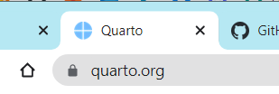
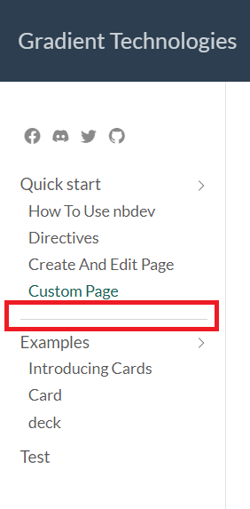
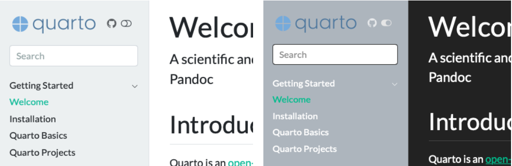
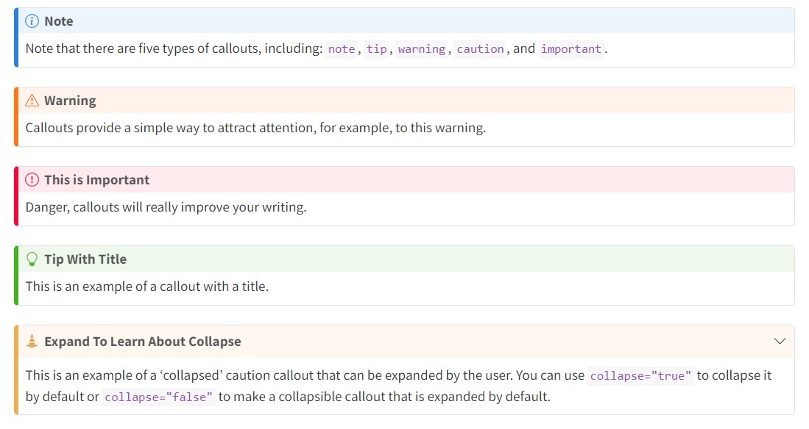

website:
navbar:
background: primary
title: My site
search: true
left:
- text: "Home"
file: index.jpynb
- talks.jpynb
- about.jpynbCustom Page
1. Setup
- Yêu cầu:
nbdev_install_quarto
2. Website
- Quarto Websites là một nền tảng website builder cung cấp các công cụ để tạo và quản lý website một cách dễ dàng và nhanh chóng. Người dùng có thể tạo ra các trang web chuyên nghiệp, thương mại điện tử và blog chỉ trong vài phút mà không cần có kiến thức về lập trình hoặc thiết kế web. Thật may mắn nbdev được xây dựng trên Quarto, do đó chúng ta có thể dễ dàng sử dụng Quarto trên nbdev.
- Một vài option có sẵn từ để custom website navigation như: Hiển thị sidebar theo cấu trúc hierarchy, giao diện điều hướng page, sub-menus …
- Để bắt đầu, bạn hãy mở file config
_quarto.ymltrong foldernbsđể có thể edit.
Favicon
- Hiển thị logo trên tab trình duyệt

website:
favicon: logo.pngSeparators
- Tách nội dung giữa các sidebar bằng
text: "---"

website:
sidebar:
contents:
- section: "Quick start"
contents:
- 03_how_to_use_nbdev.ipynb
- 04_directives.ipynb
- 05_create_page.ipynb
- 06_beautiful_page.ipynb
- text: "---"
- section: "Examples"
contents:
- 00_card_overview.ipynb
- 01_card.ipynb
- 02_desk.ipynb
- 07_test.ipynbDark Mode
- Bật chế độ cho phép chuyển đổi theme: darkly <-> flatly

format:
html:
theme:
light: flatly
dark: darkly
css: styles.css
toc: true
Tìm hiểu thêm tại Quarto - Website Navigation 😁 💨
3. Custom Content
Trong nbdev, chúng ta có thể sử dụng HTML, CSS, Markdown để decore nội dung của page thông qua Markdown cell trong notebook.
Formatting Links
- Test 1 –>
[Test 1](07_test.ipynb) - Test 2 –>
<a style="color: red; text-decoration: none;" href="07_test.ipynb">Test 2</a> - Test 3 –>
<a class="link-hover" href="07_test.ipynb">Test 3</a>
Note
Test 1 sử dụng markdown.
Test 2 sử dụng html.
Đối với Test 3 hơi phức tạp, liên quan đến cả html và css nên cần phải sử dụng
file `styles.css` trong folder `nbs`. Cụ thể chúng ta sẽ tạo `class="link"` ở
đây, sau đó sẽ set các thuộc tính của class link tại file css như sau:.link{
color: #73D0FF;
text-decoration: none;
}
.link:hover{
color: #686868;
text-decoration: none;
}
.link:active{
color: black;
text-decoration: none;
}Callout Blocks

Để làm được như vậy, sử dụng markdown syntax như sau:
::: {.callout-note}
Note that there are five types of callouts, including:
`note`, `warning`, `important`, `tip`, and `caution`.
:::::: {.callout-tip}
This is an example of a callout with a title.
:::::: {.callout-caution collapse="true"}
This is an example of a 'folded' caution callout that can be expanded by the user. You can
use `collapse="true"` to collapse it by default or `collapse="false"` to make a collapsible
callout that is expanded by default.
:::